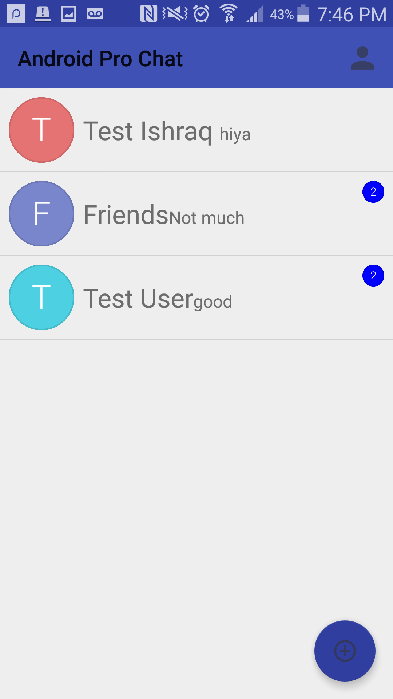

Hi! My name is Ishraq, and I am pursuing an undergraduate degree in computer science at Purdue University. My main interests are in machine learning as well as software development. Throughout the past few years, I have learned multiple programming languages, and have become quite proficient in Java and Python.
Other languges I have had experience with include C, C++, MATLAB, PostGreSQL, as well as some HTML/CSS. I really enjoy building things through programming, such as android applicatons, ganes, toolkits, as well as creating this personal website!
I started my education at Purdue in the college of engineering, but after taking my first computer science courses, I felt that computer science would be a better fit and switched majors. My planned focus is machine intelligence, but I also plan to have a background/experience in software engineering, so that I can hopefully implement machine learning into new software.
I spent the summer of 2017 assisting Professor Jung with his research with the CMS Detector. As of now, the data collected is not accessible to everyone, so I worked on developing an Android application that takes the data from a remote server, and creates/displays a histogram of that data so that anyone can view it by simply downloading the app.
As part of the ACM Sig Apps club, I helped start a study scheduling app for android exclusively for Purdue students. I worked on some of the front end interface for this app, which is still in progress. This was my first experience with mobile app development.
During my freshman year, I was part of Engineering Projects in Community Service (EPICS), and my team worked on building a portable, cost-efficient kindle for the blind. I wrote some Python scripts for translating the English input to Braille output for the users to read. During second semester, I was also the webmaster for my EPICS team, in which I was responsible for updating and maintaining the project website.
Code for my side projects can be viewed on my github. Hover your mouse over images to enlarge them.
This is a messaging app that I made for Android, learning how to use QuickBlox as a back-end platform in the process. Currently, this app supports private chat, group chat, online user count, and some other features. I would like to add more features in the future, such as a contact list, typing status, etc.
A basic app that has a camera on, and when there is text showing in the camera view, the app recognizes that text and starts displaying it. Currently in progress to add more useful functionality to this app, as it has some potential for growth.